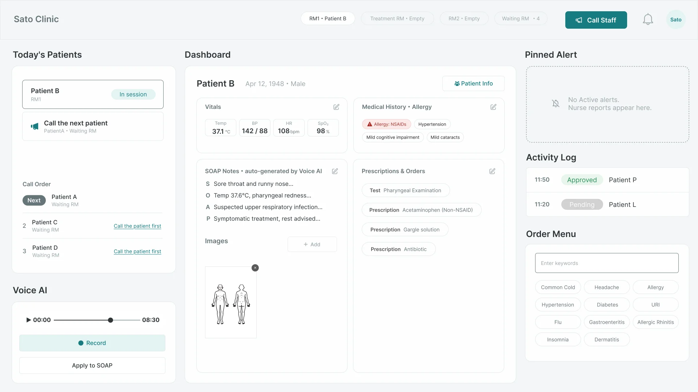
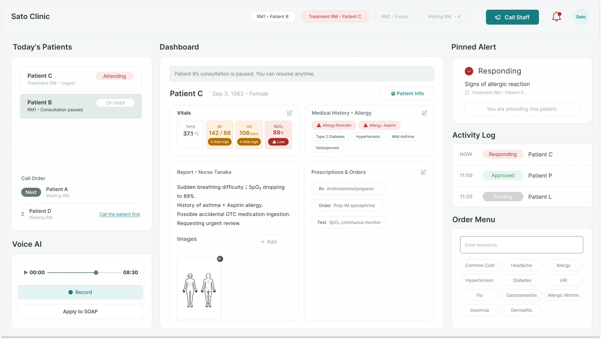
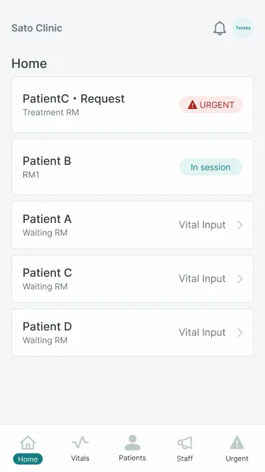
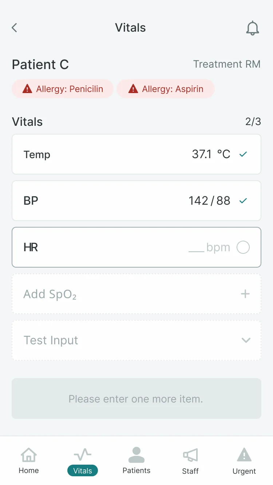
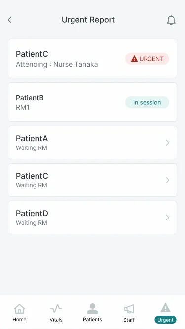
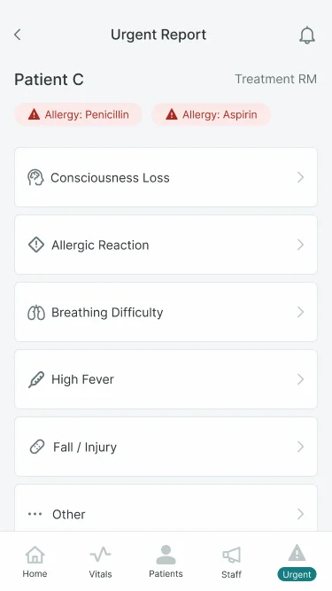
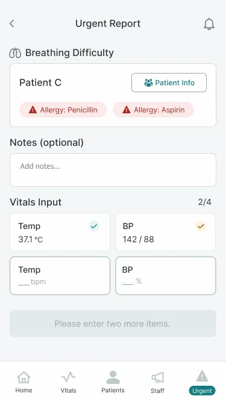
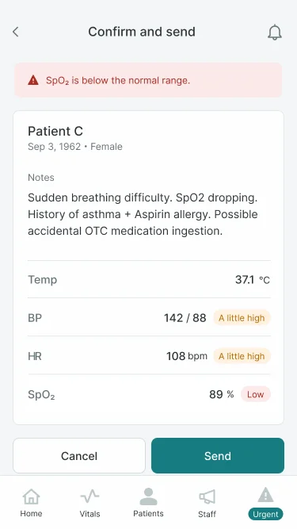
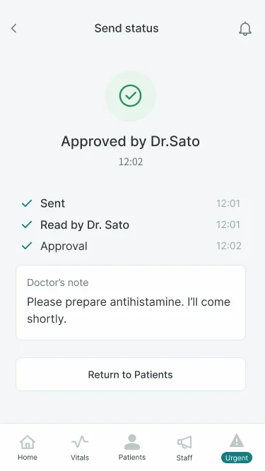

看護師の報告と医師の集中を、
音を立てずにつなぐ
Google UX Design Certificateの課題として、プライマリケア診療所向けの患者情報管理システムを2ヶ月で設計した（架空クライアント）。診療所に潜む「データの分断・伝達ラグ・入力疲弊」に対し、医師向けの3ペイン固定ダッシュボードと、看護師向けのモバイルをリアルタイムで同期させる形を提案。体験のコンセプトは「静かな同期」。紙のワイヤーからユーザビリティテスト2ラウンドを経て、Hi-Fiモックまで仕上げた。
担当：リサーチ〜ワイヤー〜ユーザビリティテスト〜Hi-Fiモック
制約
Google UX Design Certificateの課題で、クライアントは架空。制作期間は2ヶ月。医療の現場で使われる前提のため、見落としを防ぐ安全性と、医師・看護師の業務を止めない使いやすさを両立させる必要があった。
課題とインサイト
競合調査とペルソナ作成から、診療所の課題を4つに整理した。情報が多すぎること、スタッフ間の連絡の抜け、重要な情報の見落とし、そして業務の流れとの摩擦。
佐藤 健一
診療の集中を途切れさせずに、見落としを防いでくれる安全網がほしい。
田中 美咲
医師の手を止める後ろめたさなく、確実に届く「送って忘れられる」連絡手段がほしい。
2人のニーズから、看護師の「送って忘れられる」入力と、医師の「動かない」ダッシュボードをつなぐ「静かな同期」を、体験のコンセプトに定めた。
プロセス
紙のワイヤーで幅広く検討し、デジタルワイヤーに落とし込んだうえで、ユーザビリティテストを2ラウンド行い、見つかった問題を1つずつ直した。
A紙のワイヤー — PC・モバイル各5案
PCは5案それぞれに狙いを持たせた。患者リストの固定で診察を止めない、通知をまとめて視線移動を減らす、浮かぶ通知で緊急対応につなげる、情報の位置を固定して探す時間をなくす、メニューから処置・処方を静かに完了する。モバイルのバイタル入力画面は、ベッドサイドで必要な情報、画面の分け方、入力状況の伝え方を5レイアウトで比べた。
Bデジタルワイヤー — 情報を絞る
- PC：情報の位置を固定し、「詳細」ボタンですぐ確認できる。入力は選択式にし、AIによる入力補助とプリセットで手入力を減らす。
- モバイル：既往歴はアレルギーだけをバッジで表示し、生年月日などは省いて情報を絞る。チェックマークと「2/3」のような表示で進み具合を伝え、必須項目がそろうまで「医師へ送信」は押せない。
Cユーザビリティテスト — 2ラウンド
「気づけない・見分けられない」
緊急バナーの見落とし、異常値が視覚的に区別できない、画面ごとに変わる送信ラベルへの迷い —— の3点を検出。アラートの色分け重大度表示と、入力時点からの異常値ハイライトで解消。
「輪郭だけでは足りない」
枠線のみの強調では不十分（色の併用が必要）、'送信'ラベル統一で迷いが解消、ヘッダー表記の微細な不整合 —— を確認。1アクション=1ラベルの原則をデザインシステムに昇格。
Dアクセシビリティ
- 色だけに頼らない：すべてのアラートに、色に加えてアイコンと文字を添えた。
- 明るい診察室でも読める：危険な値は、太い枠と色の変化の両方で示した。
- 手袋をしていても押せる：ボタンやリストの行は44px以上にした。
完成形と結果
ジャーニーマップで「異常値の発見 → 医師の承認」までを4つの段階に分け、それぞれの場面の気持ちに合わせて、システムの役割を決めた。
数タップのバイタル入力
モバイルの入力を安全必須項目のみに絞り、ベッドサイドで数タップで完了できるようにした。
固定ゾーンへのピン留め
緊急アラートは医師画面の固定ゾーンに表示。スクロールで流れず、視線移動だけで気づける。
送って忘れられる同期
送信・既読・承認のステータスが自動で返り、口頭確認もフォローアップも不要になる。
ワンクリックの最短ループ
アラートから治療指示までを最短化。確認漏れはハードストップで構造的に防ぐ。
医師のダッシュボードは、状態によってこう変わる。緊急アラートは固定ゾーンに現れ、スクロール位置に関係なく視界に入る。


看護師のモバイルは、入力から医師への送信までを数タップで完了できる。







架空クライアントの課題のため、実際の運用での効果は測っていない。テストでは、Round 1で見つかった送信ラベルの迷いが、ラベルの統一によってRound 2で解消されたことを確認した。
振り返り
ラベルの一貫性が、操作への信頼に直結していた。送信ラベルが画面ごとに違うだけで、「操作が実行されたのか」と迷う参加者がいた。医療のツールでは、一貫性は見た目の問題ではなく、操作を信じられるかどうかを左右する。
また、急ぎの情報は、色だけでは伝わりきらない。色に文字とアイコンを組み合わせる必要があると分かった。
次は、時間に追われる状況での色分けとアラートの3回目のテスト、手袋をした状態でのモバイル入力のテスト、色・文字・ボタンの言葉をまとめたスタイルガイドの作成に取り組みたい。
Deck
ケーススタディ全文（PDF）
上記はWeb向けに要点をまとめたものです。リサーチからHi-Fiモックアップまでの全工程は、下記のスライドデッキからそのままご覧いただけます。
PDFが表示されない場合は「別タブで開く」からご覧ください。